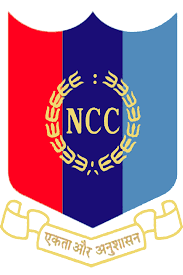

Motto of NCC
The need for having motto for the Corps was discussed in the 11th Central Advisory Committee (CAC) meeting held on 11 Aug 1978. The mottos suggested were "Duty and Discipline"; "Duty, Unity and Discipline"; "Duty and Unity"; "Unity and Discipline". The final decision for selection of "Unity and Discipline" as motto for the NCC was taken in the 12th CAC meeting held on 12 Oct 1980. Unity and Discipline (Ekta aur Anushasan) The need for having motto for the Corps was discussed in the 11th Central Advisory Committee (CAC) meeting held on 11 Aug 1978. The mottos suggested were "Duty and Discipline"; "Duty, Unity and Discipline"; "Duty and Unity"; "Unity and Discipline". The final decision for selection of "Unity and Discipline" as motto for the NCC was taken in the 12th CAC meeting held on 12 Oct 1980. The NCC is a responsive and continuously evolving organization. Its activities are guided by certain core values that we endeavor to instill among all ranks of the NCC.
AIR WING CADETS AT RDC 2022,KEC

NCC FLAG

To Know more about NCC click here
ENROLL
If you wish to Join NCC fill the below form